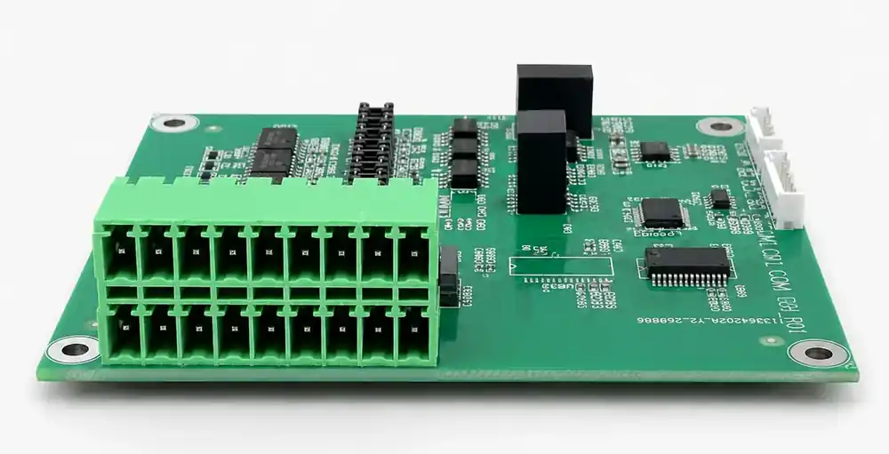

01CAN 1 + CAN 2
Two independent CAN FD channels
Classic CAN and CAN FD support, with a CAN FD data phase up to 8 Mbps.
- Dedicated board headers
- CANH · CANL · GND

Dedicated connectors separate the host, CAN, and serial paths while keeping the complete interface layer on one board.
Classic CAN and CAN FD support, with a CAN FD data phase up to 8 Mbps.
Connect directly to a mainboard USB header without routing an external USB cable.

A single two-row field terminal keeps all six serial links organized for internal wiring.